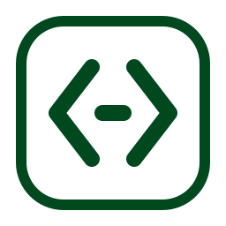

kendell.uk
GitHub
Projects
A landing page for things I made.
ARTIQ lab website
Aggregates and displays live lab data. Control is a work in progress.
↗

Serena dashboard
Semantic code tooling and long-running task dashboard.
↗
Boat repairs
WIP
Guidance on boat maintenance and repairs.
↗